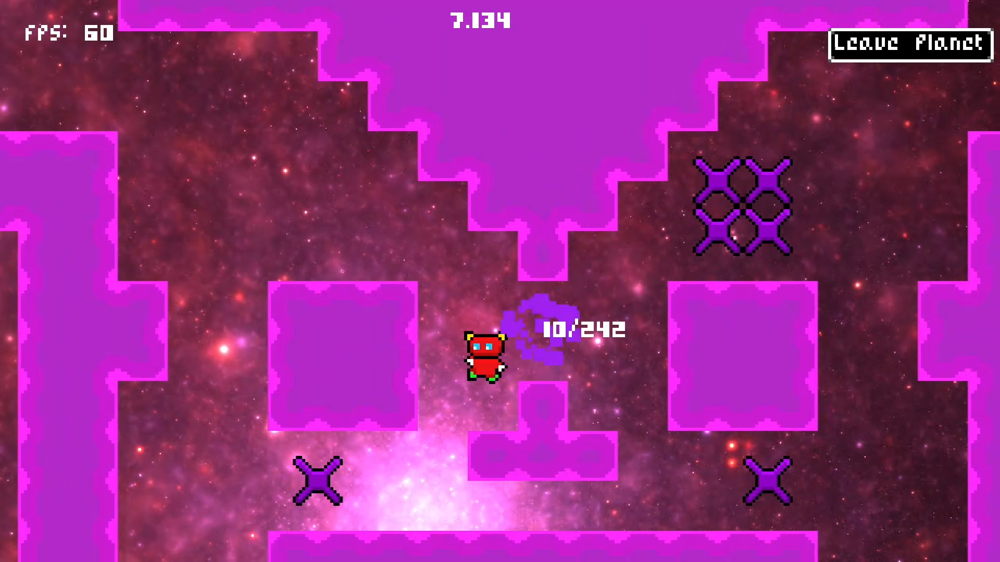
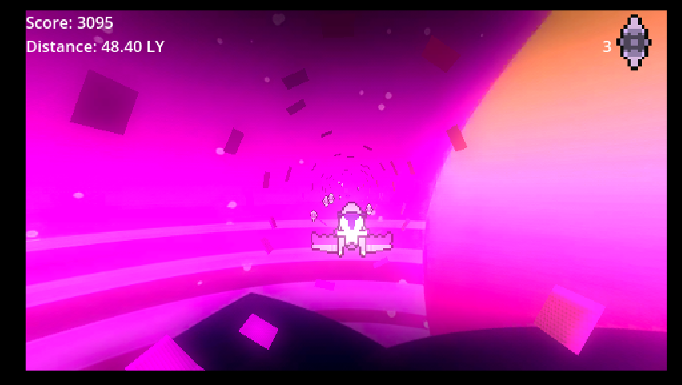
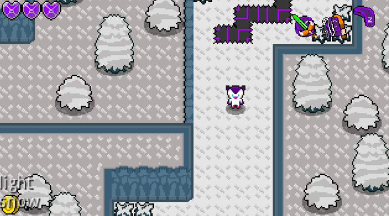
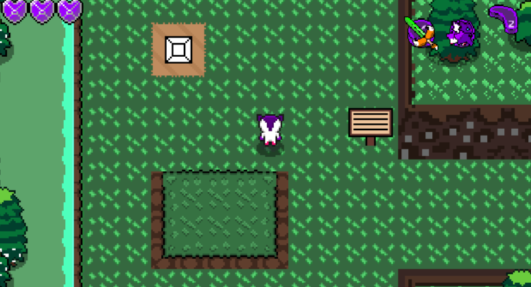

Projects
Finished Projects
Here are some projects that I have made and worked on!- Solarscape, a game where the challenge was making the game within a month
- WarpOn, a game jam entry for the the On The Run game jam!
- A tool for figuring out new, changed, and removed files in a directory
- Some mods for the popular game Minecraft, such as...
- Phase's Discord Rich Presence , a mod to connect the client of Minecraft and the Discord client together in order to present information on the person's Discord status, such as what item the person is holding and for how long they've played. This mod has over 80k downloads as of 1/29/2026
- Distance Travel, a mod to allow measuring distance to get distance/length information


Work in Progress Projects
Here are some projects that I am currently working on!- A full length game I have been working on for over two years. It aims to play and feel like an old-school Zelda game.

